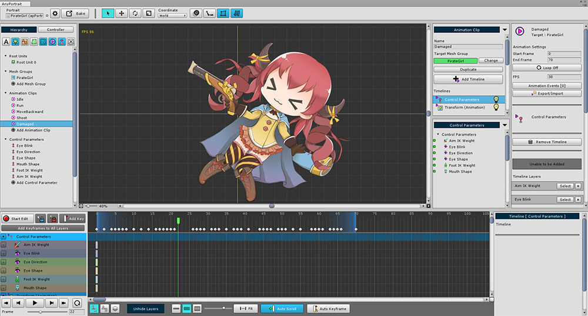
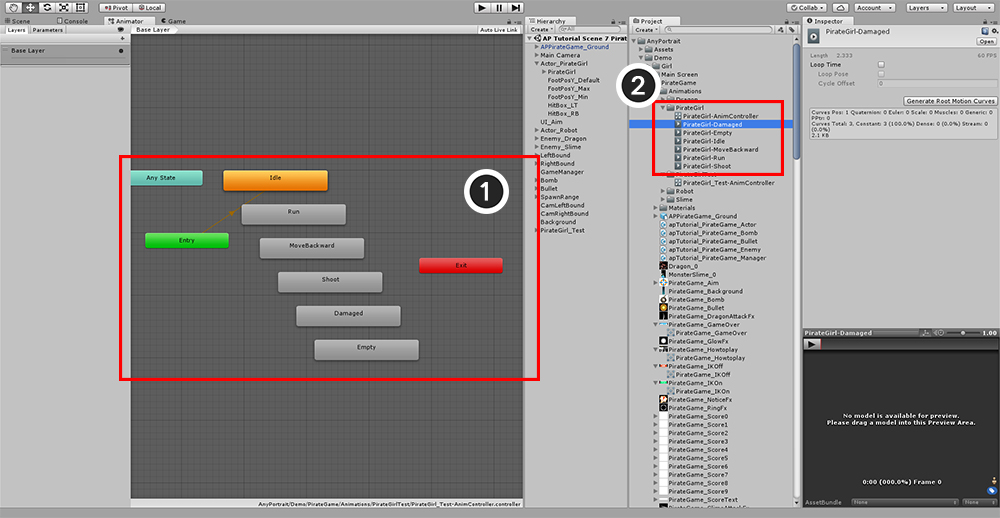
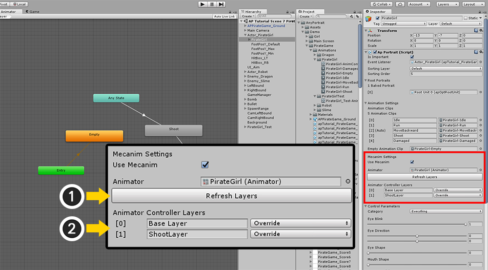

AnyPortrait > マニュアル > 「Mecanim」利用
「Mecanim」利用
1.0.4
ゲームを作成するとき、多くのゲームプロデューサはステートマシンを使用してアニメーションを作成します。
Unityで「Mecanim」がこのような開発プロセスで使用されます。
スクリプトの伝統的なアニメーションの制御とは異なり、状態マシンによってアニメーションが切り替わります。
バージョン1.0.4からAnyPortraitはUnityの「Mecanim」がアニメーションを制御する機能をサポートします。
「Animator」コンポーネントを使用する「Mecanim」システムは、基本的にはUnityのHumanoid3Dのモデルに最も適しています。
したがってAnyPortraitは「Mecanim」のすべての機能と互換性がありませんので、この点に注意してください。

まず、AnyPortraitでアニメーションを作成します。
従来の方法と同様に作成します。

Bakeダイアログボックスで 「Is Mecanim Animation」をチェックしてください。
AnyPortraitはアニメーションを「Animation Clip」に変換して保存するので、それらのアセットを保存するパスを設定する必要があります。

「Mecanim」を使用する方法で保存すると、自動的に「Animator」コンポーネントが追加されます。
「Animator」コンポーネントが初めて追加されると、「Animation Controller」が自動的に作成されます。

「Animator」エディタを開くと、(1) 「State」が自動的に作成されます。
(2) 各「State」の「Motion」のソースである「Animation Clip」が作成され、設定されたパスに保存されます。

注意すべき点があります。
AnyPortraitは 「Mecanim」の 「Empty State」を認識しません。
したがって、 「Empty」という名前の生成された 「Animation Clip」を含む状態を使用する必要があります。
「Empty state」を使用する場合は、必ず「Empty」という名前の「Animation Clip」を「Motion」として使用してください。

「Animator」エディタで 「Transition」などを設定して 「Animator」を編集します。
(「Sub-State Machine」と「Blend Tree」は正式にサポートされていません。)
Animatorにレイヤーを追加する
複数のアニメーションをレイヤーとしてセットアップして同時に実行できます。
「走ったりジャンプ中に銃を撃つ」のようなアニメーションを作成することができます。
AnyPortraitの既存のアニメーションスクリプトは、レイヤー機能をサポートし、「Mecanim」もでもそれをサポートします。
次のような方法でレイヤーを追加して構成することができます。

「Animator」では、レイヤーを追加してステートマシンを構成します。
基本的には、「マージしていないレイヤの状態」に対して「Empty state」を作成することをお勧めします。
上記のように、 「Empty」という名前の 「Animation Clip」を使用して 「State」を作成します。
また、 「Blending」と 「Weight」を設定します。

apPortraitインスペクタの「Mecanim」設定項目を確認してください。
ここで "Mecanim"情報を変更する必要があります。
(1) 「Refresh Layers」ボタンを押します。
(2) 作成したレイヤーが追加されていることがわかります。
レイヤーの追加、削除、または「Blending」モードが変更された場合は、常に「Refresh Layers」ボタンを押してください。
Mecanimを使用する際の注意点
AnyPortraitを Mecanimで接続するときは注意が必要です。
ここでは、上述した内容も含まれます。
- あなたは 「Mecanim」の 「Empty State」を使うことはできません。 必要に応じて、「Motion」として作成された「Empty」の「Animation Clip」を「State」として使用する必要があります。
- 「Sub-State Machine」と「Blend Tree」はサポートされていません。
- 「Mecanim」とリンクした後、AnyPortraitが提供するアニメーションスクリプト機能は使用できません。 「Animator」を参照し、その機能を呼び出します。
- アニメーションレイヤーを追加または変更した場合は、インスペクタの「Refresh Layers」ボタンを押してレイヤー情報を更新します。
- 既存のアニメーションにマージして別のアニメーションをレイヤーとして追加する場合は、マージしないオブジェクトのタイムラインレイヤーを作成しないでください。
(たとえば、モーションが「別の上体モーションで実行中」の場合、「上体モーション」アニメーションにはレッグオブジェクト用のタイムラインレイヤーはありません。)
- 「Mecanim」でアニメーションを制御する場合、apPortraitの位置は（0、0、0）に固定されます。 新しい「GameObject」を作成し、「Transform」を制御するためにその上に配置することをお勧めします。